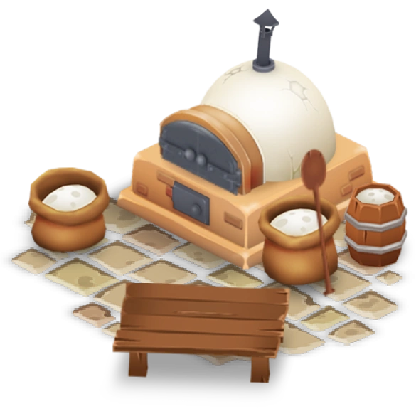

The Feed Mill is a production building unlocked at experience level 3. A second one is unlocked at level 12. The first costs 5 💰, the second 3200 💰. Both take 40 seconds to build and give players 4 â when completed.
Chicken Feed
Level 3
⏱ 4 min
âââ 3 min
âââ 3 min
💰 7
â 1
â 1
Cow Feed
Level 6
⏱ 10 min
âââ 8 min
âââ 8 min
💰 14
â 2
â 2
Pig Feed
Level 10
⏱ 20 min
âââ 17 min
âââ 17 min
💰 14
â 2
â 2
Sheep Feed
Level 16
⏱ 30 min
âââ 25 min
âââ 25 min
💰 14
â 3
â 3
Goat Feed
Level 32
⏱ 40 min
âââ 34 min
âââ 34 min
💰 14
â 3
â 3
Meat Bucket
Level: Reputation 3
⏱ 45 min
âââ 38 min
âââ 38 min
💰 72
â 9
â 9
Wheat Bundle
Level: Reputation 3
⏱ 1h 30 min
âââ 1h 16 min
âââ 1h 16 min
💰 50
â 10
â 10